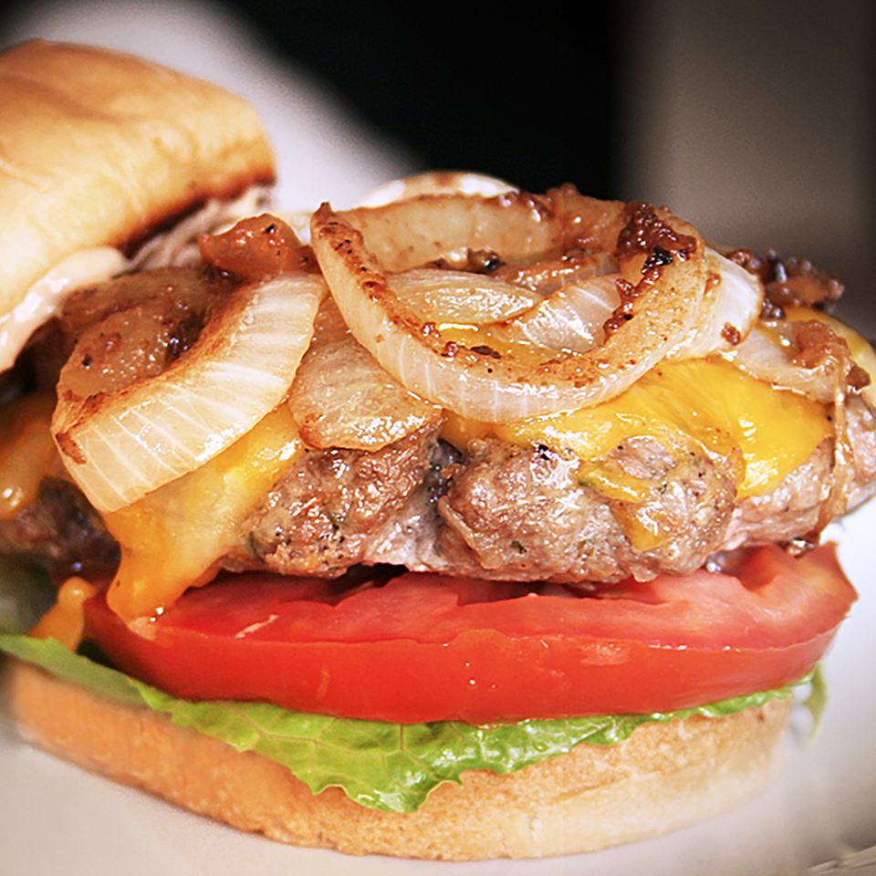

Hamburger

Description
The best burger recipe for summertime grilling. This juicy burger is jam-packed with all kinds of stuff and no tasteless bread crumbs! Serve on buns with your favorite condiments.
Ingredients
- 1.5 pounds lean ground beef
- 0.5 cup shredded Colby Jack or Cheddar cheese
- 1 (1 ounce) envelope dry onion soup mix
- 1 egg
- 1 clove garlic, minced
- 1 tablespoon garlic powder
- 1 teaspoon soy sauce
- 1 teaspoon Worcestershire sauce
- 1 teaspoon dried parsley
- 1 teaspoon dried basil
- 1 teaspoon dried oregano
- 0.5 teaspoon crushed dried rosemary
- salt and pepper to taste
- 0.5 onion, finely chopped
Steps
- Preheat a grill on high heat.
- Mix together ground beef, onion, cheese, onion soup mix, egg, garlic, garlic powder, soy sauce, Worcestershire sauce, parsley, basil,
oregano, rosemary, salt, and pepper in a large bowl.
- Use your hands to form 4 patties.
- Cook patties on the preheated grill until well-done, about 5 minutes per side.